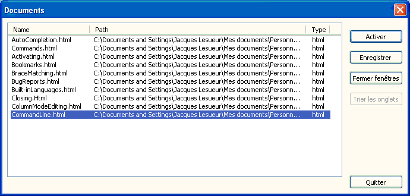

Texto original
Sugiere una traducción mejor
| Previous: Accesos directos para el menú Ejecutar | Tabla de contenido | Siguiente: Elementos de GUI |
El menú Ventana le permite seleccionar un archivo de la lista de los primeros 10 documentos abiertos en la vista activa (consulte también
Vista múltiple ). Seleccionar un documento de la lista le permite activarlo:

puede abrir el cuadro de diálogo seleccionando
Le permite administrar todos los documentos abiertos. Actualmente.
El cuadro de diálogo Documentos muestra una lista de todos los documentos abiertos en la vista activa. Puede seleccionar uno o más documentos en la lista. Como cualquier lista de control de Windows, seleccione varias arrastrando el puntero del mouse o presionando Ctrl o Shift al seleccionar o usar las teclas de flecha en su teclado, manteniendo presionada la tecla Ctrl o Shift presionada (si lo haces, usa la barra espaciadora para (seleccionar)).
Puede activar un documento haciendo clic en el botón . Esto cerrará el cuadro de diálogo.
Seleccione una o más líneas y luego presione el botón , realizará la operación de guardar, si es posible, en todos los documentos seleccionados; si se necesita Guardar como ... , no pasará nada (ver Administración de archivos ).
Seleccione una o más líneas, luego presione el , cierre el (los) documento (s). Si un documento contiene cambios, se le preguntará si desea guardarlos.
Para ordenar los documentos usando el cuadro de diálogo, primero ordene la lista seleccionando uno de los encabezados de columna en la parte superior (la opción de clasificación se invierte con cada clic en la columna). La ordenación será efectiva después de presionar el botón .
Haga en para cerrar el cuadro de diálogo.